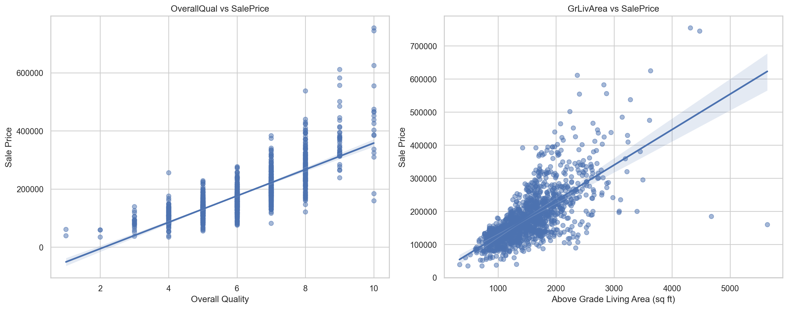
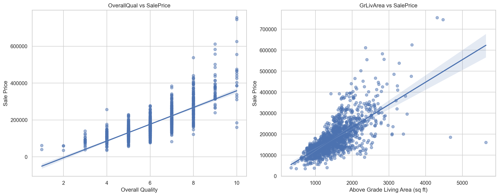

import pandas as pd
import numpy as np
import matplotlib.pyplot as plt
import seaborn as sns
import os
import sys
import plotly.express as px
import plotly.graph_objects as go
from sklearn.model_selection import train_test_split
from sklearn.linear_model import LinearRegression
from sklearn.preprocessing import StandardScaler
from sklearn.ensemble import RandomForestRegressor
from sklearn.metrics import mean_squared_error, mean_absolute_error, r2_score
from sklearn.model_selection import GridSearchCV
from sklearn.model_selection import RandomizedSearchCV
from sklearn.preprocessing import LabelEncoder
from sklearn.experimental import enable_iterative_imputer
from sklearn.impute import IterativeImputer
from sklearn.compose import ColumnTransformer
from sklearn.preprocessing import StandardScaler, OneHotEncoder
from sklearn.pipeline import Pipeline
from sklearn.tree import DecisionTreeRegressor
from sklearn.ensemble import RandomForestRegressor, GradientBoostingRegressor, AdaBoostRegressor
from sklearn.svm import SVR
import xgboost as xgb
from sklearn.metrics import r2_score
train_path = r"C:\Users\jorda\OneDrive\Desktop\Nxt24\House price detection\CSV\train.csv"
test_path = r"C:\Users\jorda\OneDrive\Desktop\Nxt24\House price detection\CSV\test.csv"
# train_path = "C:/Users/jorda/OneDrive/Desktop/Nxt24/House price detection/CSV/train.csv"
# test_path = "C:/Users/jorda/OneDrive/Desktop/Nxt24/House price detection/CSV/test.csv"
# Loading the CSV files
df_train = pd.read_csv(train_path)
df_test= pd.read_csv(test_path)
# Display the first few rows of the dataframes
print(df_train.head())
print(df_test.head())
pd.set_option('display.max_rows', None)
# Calculate and display the percentage of missing values in each column of train_df
missing_values_percentage = df_train.isnull().sum().sort_values(ascending=False) * 100 / len(df_train)
print("\nPercentage of missing values in each column of train_df:")
print(missing_values_percentage)
pd.set_option('display.max_rows', None)
# display maximum number of rows
df_train.isnull().sum().sort_values(ascending=False)*100/len(df_train)
# Print the column names of the DataFrame
print("Columns in train_df:")
print(df_train.columns.tolist())
print("\nColumns in test_df:")
print(df_test.columns.tolist())
# To drop columns with more than 60% missing values
threshold = 0.6
df_train_clean = df_train.loc[:, df_train.isnull().mean() <= threshold]
df_test_clean = df_test.loc[:, df_test.isnull().mean() <= threshold]
# To plot heatmap of missing values for the train DataFrame
plt.figure(figsize=(12, 8))
sns.heatmap(df_train.isnull(), cbar=False, cmap='viridis')
plt.title('Missing Values Heatmap - Train DataFrame')
plt.show()
# To plot heatmap of missing values for the test DataFrame
plt.figure(figsize=(12, 8))
sns.heatmap(df_test.isnull(), cbar=False, cmap='viridis')
plt.title('Missing Values Heatmap - Test DataFrame')
plt.show()
# To check missing values in training data and display the percentage of missing values
missing_values_percentage_train = df_train.isnull().sum().sort_values(ascending=False) * 100 / len(df_train)
print("\nPercentage of missing values in each column of train data:")
print(missing_values_percentage_train)
# To check missing values in testing data and display the percentage of missing values
missing_values_percentage_test = df_test.isnull().sum().sort_values(ascending=False) * 100 / len(df_test)
print("\nPercentage of missing values in each column of test data:")
print(missing_values_percentage_test)
# To re-check missing values in training data
missing_values_train = df_train.isnull().sum()
print("\nMissing values in each column of train data:")
print(missing_values_train)
# To re-check missing values in testing data
missing_values_test = df_test.isnull().sum()
print("\nMissing values in each column of test data:")
print(missing_values_test)
# Re-checking the dataframes
df_train.info()
df_test.info()
# Get concise information about the training DataFrame
print("Concise information about train_df:")
print(df_train.info())
# Get concise information about the testing DataFrame
print("\nConcise information about test_df:")
print(df_test.info())
# Concatenate the training and testing data to ensure consistent label encoding
combined_data = pd.concat([df_train, df_test], axis=0)
# Loop through each column in the combined data
for column in combined_data.columns:
# Check if the column contains categorical data
if combined_data[column].dtype == 'object':
# Initialize LabelEncoder
label_encoder = LabelEncoder()
# Fit LabelEncoder on combined data to ensure consistency
label_encoder.fit(combined_data[column].astype(str))
# Transform both training and testing data
df_train[column] = label_encoder.transform(df_train[column].astype(str))
df_test[column] = label_encoder.transform(df_test[column].astype(str))
# Let's print the first few rows of the encoded data to verify the transformation
print("Encoded Training Data:")
print(df_train.head())
print("\nEncoded Testing Data:")
print(df_test.head())
# The shape of the training DataFrame
print("Shape of train_df:", df_train.shape)
# The shape of the testing DataFrame
print("Shape of test_df:", df_test.shape)
# To remove duplicated rows
df_train.drop_duplicates(inplace=True)
df_test.drop_duplicates(inplace=True)
# To remove duplicated columns
df_train = df_train.loc[:, ~df_train.columns.duplicated()]
df_test = df_test.loc[:, ~df_test.columns.duplicated()]
# To remove duplicate indices from the training DataFrame
df_train = df_train[~df_train.index.duplicated()]
# To remove duplicate indices from the testing DataFrame
df_test = df_test[~df_test.index.duplicated()]
# To identify categorical columns in the training DataFrame
df_train = pd.read_csv(train_path)
categorical_cols_train = df_train.select_dtypes(include=['object']).columns.tolist()
print("Categorical columns in the training DataFrame:")
print(categorical_cols_train)
# List of categorical columns
categorical_cols = ['MSZoning', 'Street', 'Alley', 'LotShape', 'LandContour', 'Utilities', 'LotConfig', 'LandSlope', 'Neighborhood', 'Condition1', 'Condition2', 'BldgType', 'HouseStyle', 'RoofStyle', 'RoofMatl', 'Exterior1st', 'Exterior2nd', 'MasVnrType', 'ExterQual', 'ExterCond', 'Foundation', 'BsmtQual', 'BsmtCond', 'BsmtExposure', 'BsmtFinType1', 'BsmtFinType2', 'Heating', 'HeatingQC', 'CentralAir', 'Electrical', 'KitchenQual', 'Functional', 'FireplaceQu', 'GarageType', 'GarageFinish', 'GarageQual', 'GarageCond', 'PavedDrive', 'PoolQC', 'Fence', 'MiscFeature', 'SaleType', 'SaleCondition']
# Iterate through each categorical column and print unique values
for col in categorical_cols:
unique_values = df_train[col].unique()
print(f"Unique values in {col}: {unique_values}")
# Function for imputing categorical missing data
def impute_categorical_missing_data(df, passed_col, bool_cols, missing_data_cols):
# Separate rows with missing values and without missing values
df_null = df[df[passed_col].isnull()]
df_not_null = df[df[passed_col].notnull()]
X = df_not_null.drop(passed_col, axis=1)
y = df_not_null[passed_col]
other_missing_cols = [col for col in missing_data_cols if col != passed_col]
label_encoder = LabelEncoder()
for col in X.columns:
if X[col].dtype == 'object' or X[col].dtype == 'category':
X[col] = label_encoder.fit_transform(X[col])
if passed_col in bool_cols:
y = label_encoder.fit_transform(y)
iterative_imputer = IterativeImputer(estimator=RandomForestRegressor(random_state=42), add_indicator=True)
for col in other_missing_cols:
if X[col].isnull().sum() > 0:
col_with_missing_values = X[col].values.reshape(-1, 1)
imputed_values = iterative_imputer.fit_transform(col_with_missing_values)
X[col] = imputed_values[:, 0]
# Split data for training and testing
X_train, X_test, y_train, y_test = train_test_split(X, y, test_size=0.2, random_state=42)
# Train RandomForestRegressor
rf_classifier = RandomForestRegressor()
rf_classifier.fit(X_train, y_train)
# Predict missing values
y_pred = rf_classifier.predict(X_test)
# Calculate accuracy
acc_score = r2_score(y_test, y_pred)
print("The feature '"+ passed_col+ "' has been imputed with", round((acc_score * 100), 2), "accuracy\n")
# Impute missing values in the original DataFrame
X = df_null.drop(passed_col, axis=1)
for col in X.columns:
if X[col].dtype == 'object' or X[col].dtype == 'category':
X[col] = label_encoder.fit_transform(X[col])
for col in other_missing_cols:
if X[col].isnull().sum() > 0:
col_with_missing_values = X[col].values.reshape(-1, 1)
imputed_values = iterative_imputer.fit_transform(col_with_missing_values)
X[col] = imputed_values[:, 0]
if len(df_null) > 0:
df_null[passed_col] = rf_classifier.predict(X)
if passed_col in bool_cols:
df_null[passed_col] = df_null[passed_col].map({0: False, 1: True})
else:
pass
df_combined = pd.concat([df_not_null, df_null])
return df_combined[passed_col]
# Function for imputing continuous missing data
def impute_continuous_missing_data(df, passed_col, missing_data_cols):
df_null = df[df[passed_col].isnull()]
df_not_null = df[df[passed_col].notnull()]
X = df_not_null.drop(passed_col, axis=1)
y = df_not_null[passed_col]
other_missing_cols = [col for col in missing_data_cols if col != passed_col]
label_encoder = LabelEncoder()
for col in X.columns:
if X[col].dtype == 'object' or X[col].dtype == 'category':
X[col] = label_encoder.fit_transform(X[col])
iterative_imputer = IterativeImputer(estimator=RandomForestRegressor(random_state=42), add_indicator=True)
for col in other_missing_cols:
if X[col].isnull().sum() > 0:
col_with_missing_values = X[col].values.reshape(-1, 1)
imputed_values = iterative_imputer.fit_transform(col_with_missing_values)
X[col] = imputed_values[:, 0]
# Split data for training and testing
X_train, X_test, y_train, y_test = train_test_split(X, y, test_size=0.2, random_state=42)
# Train RandomForestRegressor
rf_regressor = RandomForestRegressor()
rf_regressor.fit(X_train, y_train)
# Predict missing values
y_pred = rf_regressor.predict(X_test)
print("MAE =", mean_absolute_error(y_test, y_pred), "\n")
print("RMSE =", mean_squared_error(y_test, y_pred, squared=False), "\n")
print("R2 =", r2_score(y_test, y_pred), "\n")
# Impute missing values in the original DataFrame
X = df_null.drop(passed_col, axis=1)
for col in X.columns:
if X[col].dtype == 'object' or X[col].dtype == 'category':
X[col] = label_encoder.fit_transform(X[col])
for col in other_missing_cols:
if X[col].isnull().sum() > 0:
col_with_missing_values = X[col].values.reshape(-1, 1)
imputed_values = iterative_imputer.fit_transform(col_with_missing_values)
X[col] = imputed_values[:, 0]
if len(df_null) > 0:
df_null[passed_col] = rf_regressor.predict(X)
else:
pass
df_combined = pd.concat([df_not_null, df_null])
return df_combined[passed_col]
# Filter and sort columns with missing values in the DataFrame
missing_values = df_train.isnull().sum()[df_train.isnull().sum() > 0].sort_values(ascending=False)
print(missing_values)
import warnings
warnings.filterwarnings('ignore')
# List of columns with missing data in training set
missing_data_cols_train = df_train.columns[df_train.isnull().any()].tolist()
# List of columns with missing data in test set
missing_data_cols_test = df_test.columns[df_test.isnull().any()].tolist()
# Define bool_cols to include all columns with boolean data type
bool_cols = [col for col in df_train.columns if df_train[col].dtype == 'bool']
# Ensure all categorical variables are encoded properly
label_encoder = LabelEncoder()
for col in df_train.columns:
if df_train[col].dtype == 'object' or col in categorical_cols_train:
df_train[col] = label_encoder.fit_transform(df_train[col].astype(str))
for col in df_test.columns:
if df_test[col].dtype == 'object' or col in categorical_cols_train:
df_test[col] = label_encoder.fit_transform(df_test[col].astype(str))
# Impute missing values using our functions for the training set
for col in missing_data_cols_train:
print("Missing Values", col, ":", str(round((df_train[col].isnull().sum() / len(df_train)) * 100, 2))+"%")
if col in categorical_cols_train:
df_train[col] = impute_categorical_missing_data(df_train, col, bool_cols, missing_data_cols_train)
else:
df_train[col] = impute_continuous_missing_data(df_train, col, missing_data_cols_train)
# Impute missing values using our functions for the test set
for col in missing_data_cols_test:
print("Missing Values", col, ":", str(round((df_test[col].isnull().sum() / len(df_test)) * 100, 2))+"%")
if col in categorical_cols_train: # Assuming you want to use the same categorical_cols_train for the test set
df_test[col] = impute_categorical_missing_data(df_test, col, bool_cols, missing_data_cols_test)
else:
df_test[col] = impute_continuous_missing_data(df_test, col, missing_data_cols_test)
# Function to print missing values in the dataframe
def print_missing_values(df, dataset_name):
missing_values = df.isnull().sum()[df.isnull().sum() > 0]
if missing_values.empty:
print(f"No missing values in {dataset_name}.")
else:
print(f"Missing values in {dataset_name}:\n{missing_values}\n")
# Print missing values before imputation
print("Before Imputation:")
print_missing_values(df_train, "training set")
print_missing_values(df_test, "test set")
# Impute missing values using our functions for the training set
for col in missing_data_cols_train:
print("Imputing Missing Values for column:", col, "(", str(round((df_train[col].isnull().sum() / len(df_train)) * 100, 2))+"%)")
if col in categorical_cols_train:
df_train[col] = impute_categorical_missing_data(df_train, col, bool_cols, missing_data_cols_train)
else:
df_train[col] = impute_continuous_missing_data(df_train, col, missing_data_cols_train)
# Impute missing values using our functions for the test set
for col in missing_data_cols_test:
print("Imputing Missing Values for column:", col, "(", str(round((df_test[col].isnull().sum() / len(df_test)) * 100, 2))+"%)")
if col in categorical_cols_train: # Assuming you want to use the same categorical_cols_train for the test set
df_test[col] = impute_categorical_missing_data(df_test, col, bool_cols, missing_data_cols_test)
else:
df_test[col] = impute_continuous_missing_data(df_test, col, missing_data_cols_test)
# Print missing values after imputation
print("After Imputation:")
print_missing_values(df_train, "training set")
print_missing_values(df_test, "test set")
# Descriptive statistics for the training dataset
descriptive_stats_train = df_train.describe(include='all')
# Display the descriptive statistics for the training dataset
print("Descriptive Statistics for Training Dataset:")
print(descriptive_stats_train.T) # Transpose for better readability
# Descriptive statistics for the test dataset
descriptive_stats_test = df_test.describe(include='all')
# Display the descriptive statistics for the test dataset
print("\nDescriptive Statistics for Test Dataset:")
print(descriptive_stats_test.T) # Transpose for better readability
# Setting up the aesthetic style of the plots
sns.set(style="whitegrid")
# Plotting distributions of key numerical variables
fig, axes = plt.subplots(1, 3, figsize=(18, 5))
# Distribution of SalePrice
sns.histplot(df_train['SalePrice'], bins=30, ax=axes[0], kde=True)
axes[0].set_title('Distribution of SalePrice')
# Distribution of LotArea
sns.histplot(df_train['LotArea'], bins=30, ax=axes[1], kde=True)
axes[1].set_title('Distribution of LotArea')
# Distribution of LotFrontage
sns.histplot(df_train['LotFrontage'], bins=30, ax=axes[2], kde=True)
axes[2].set_title('Distribution of LotFrontage')
plt.tight_layout()
plt.show()
# Correlation analysis
correlation_matrix_train = df_train.corr()
# Plotting the heatmap of the correlation matrix for the training dataset
plt.figure(figsize=(15, 12))
sns.heatmap(correlation_matrix_train, annot=False, cmap='coolwarm')
plt.title('Correlation Matrix of Variables in Training Dataset')
plt.show()
# Displaying correlation values with SalePrice in descending order for the training dataset
correlation_with_saleprice_train = correlation_matrix_train['SalePrice'].sort_values(ascending=False)
print("Correlation with SalePrice (Training Dataset):")
print(correlation_with_saleprice_train)
# Plotting count plots for MSSubClass and MSZoning
fig, axes = plt.subplots(1, 2, figsize=(15, 6))
# Count plot for MSSubClass
sns.countplot(x='MSSubClass', data=df_train, ax=axes[0])
axes[0].set_title('Count of Properties by MSSubClass')
axes[0].set_xlabel('MSSubClass')
axes[0].set_ylabel('Count')
# Count plot for MSZoning
sns.countplot(x='MSZoning', data=df_train, ax=axes[1])
axes[1].set_title('Count of Properties by MSZoning')
axes[1].set_xlabel('MSZoning')
axes[1].set_ylabel('Count')
plt.tight_layout()
plt.show()
# Scatter plots with regression lines for OverallQual and GrLivArea against SalePrice
fig, axes = plt.subplots(1, 2, figsize=(15, 6))
# Scatter plot for OverallQual vs SalePrice
sns.regplot(x='OverallQual', y='SalePrice', data=df_train, ax=axes[0], scatter_kws={'alpha':0.5})
axes[0].set_title('OverallQual vs SalePrice')
axes[0].set_xlabel('Overall Quality')
axes[0].set_ylabel('Sale Price')
# Scatter plot for GrLivArea vs SalePrice
sns.regplot(x='GrLivArea', y='SalePrice', data=df_train, ax=axes[1], scatter_kws={'alpha':0.5})
axes[1].set_title('GrLivArea vs SalePrice')
axes[1].set_xlabel('Above Grade Living Area (sq ft)')
axes[1].set_ylabel('Sale Price')
plt.tight_layout()
plt.show()
# Box plots for SalePrice, OverallQual, and GrLivArea
fig, axes = plt.subplots(1, 3, figsize=(18, 6))
# Box plot for SalePrice
sns.boxplot(y=df_train['SalePrice'], ax=axes[0])
axes[0].set_title('Box Plot of SalePrice')
axes[0].set_ylabel('Sale Price')
# Box plot for OverallQual
sns.boxplot(y=df_train['OverallQual'], ax=axes[1])
axes[1].set_title('Box Plot of OverallQual')
axes[1].set_ylabel('Overall Quality')
# Box plot for GrLivArea
sns.boxplot(y=df_train['GrLivArea'], ax=axes[2])
axes[2].set_title('Box Plot of GrLivArea')
axes[2].set_ylabel('Above Grade Living Area (sq ft)')
plt.tight_layout()
plt.show()
# Preprocessing steps
numerical_cols = [col for col in df_train.columns if df_train[col].dtype in ['int64', 'float64'] and col != 'SalePrice']
categorical_cols = df_train.select_dtypes(include=['object']).columns
numerical_transformer = StandardScaler()
categorical_transformer = OneHotEncoder(handle_unknown='ignore')
preprocessor = ColumnTransformer(
transformers=[
('num', numerical_transformer, numerical_cols),
('cat', categorical_transformer, categorical_cols)
])
# Define models
model_dict = {
'Linear Regression': LinearRegression(),
'Decision Tree Regression': DecisionTreeRegressor(),
'Random Forest Regression': RandomForestRegressor(),
'Support Vector Machine Regression': SVR(),
'XGBoost Regression': xgb.XGBRegressor(),
'GB Regressor': GradientBoostingRegressor(),
'Ada Boost Regression': AdaBoostRegressor()
}
# Split the dataset
X = df_train.drop('SalePrice', axis=1)
y = df_train['SalePrice']
X_train, X_test, y_train, y_test = train_test_split(X, y, test_size=0.2, random_state=0)
# Creating pipelines
pipelines = {name: Pipeline(steps=[('preprocessor', preprocessor), ('model', model)]) for name, model in model_dict.items()}
# Training and evaluating models
rmse_results = {}
for name, pipeline in pipelines.items():
pipeline.fit(X_train, y_train)
predictions = pipeline.predict(X_test)
rmse = np.sqrt(mean_squared_error(y_test, predictions))
rmse_results[name] = rmse
# Display RMSE results
rmse_results_sorted = dict(sorted(rmse_results.items(), key=lambda item: item[1]))
print(rmse_results_sorted)
# Splitting the Data
df_train = df_train[~df_train['Id'].isin(df_test['Id'])]
df_test = df_test[df_test['Id'].isin(df_test['Id'])]
# Preparing X_train and y_train
X_train = df_train.drop(['SalePrice'], axis=1) # Features
y_train = df_train['SalePrice'] # Target variable
# Train the XGBoost regressor
xgb_model = xgb.XGBRegressor()
xgb_model.fit(X_train, y_train)
# Predict the test data using the trained model
y_pred = xgb_model.predict(df_test) # No need to drop 'SalePrice' since it's not present
# Create a DataFrame for submission
final_file = pd.DataFrame({
'Id': df_test['Id'], # Assuming 'Id' is the identifier column in your test data
'SalePrice': y_pred
})
# Save the submission DataFrame to a CSV file
final_file.to_csv('final_file.csv', index=False)
# Preprocessing steps
numerical_cols = [col for col in df_train.columns if df_train[col].dtype in ['int64', 'float64'] and col != 'SalePrice']
categorical_cols = df_train.select_dtypes(include=['object']).columns
numerical_transformer = StandardScaler()
categorical_transformer = OneHotEncoder(handle_unknown='ignore')
preprocessor = ColumnTransformer(
transformers=[
('num', numerical_transformer, numerical_cols),
('cat', categorical_transformer, categorical_cols)
])
# Define models
model_dict = {
'Linear Regression': LinearRegression(),
'Decision Tree Regression': DecisionTreeRegressor(),
'Random Forest Regression': RandomForestRegressor(),
'Support Vector Machine Regression': SVR(),
'XGBoost Regression': xgb.XGBRegressor(),
'GB Regressor': GradientBoostingRegressor(),
'Ada Boost Regression': AdaBoostRegressor()
}
# Split the dataset
X = df_train.drop('SalePrice', axis=1)
y = df_train['SalePrice']
X_train, X_test, y_train, y_test = train_test_split(X, y, test_size=0.2, random_state=0)
# Creating pipelines
pipelines = {name: Pipeline(steps=[('preprocessor', preprocessor), ('model', model)]) for name, model in model_dict.items()}
# Training and evaluating models
r2_results = {}
for name, pipeline in pipelines.items():
pipeline.fit(X_train, y_train)
predictions = pipeline.predict(X_test)
r2 = r2_score(y_test, predictions)
r2_results[name] = r2
# Display R results
r2_results_sorted = dict(sorted(r2_results.items(), key=lambda item: item[1], reverse=True))
print(r2_results_sorted)
Id MSSubClass MSZoning LotFrontage LotArea Street Alley LotShape
\
0 1 60 RL 65.0 8450 Pave NaN Reg
1 2 20 RL 80.0 9600 Pave NaN Reg
2 3 60 RL 68.0 11250 Pave NaN IR1
3 4 70 RL 60.0 9550 Pave NaN IR1
4 5 60 RL 84.0 14260 Pave NaN IR1
LandContour Utilities ... PoolArea PoolQC Fence MiscFeature MiscVal
MoSold \
0 Lvl AllPub ... 0 NaN NaN NaN 0
2
1 Lvl AllPub ... 0 NaN NaN NaN 0
5
2 Lvl AllPub ... 0 NaN NaN NaN 0
9
3 Lvl AllPub ... 0 NaN NaN NaN 0
2
4 Lvl AllPub ... 0 NaN NaN NaN 0
12
YrSold SaleType SaleCondition SalePrice
0 2008 WD Normal 208500
1 2007 WD Normal 181500
2 2008 WD Normal 223500
3 2006 WD Abnorml 140000
4 2008 WD Normal 250000
[5 rows x 81 columns]
Id MSSubClass MSZoning LotFrontage LotArea Street Alley
LotShape \
0 1461 20 RH 80.0 11622 Pave NaN
Reg
1 1462 20 RL 81.0 14267 Pave NaN
IR1
2 1463 60 RL 74.0 13830 Pave NaN
IR1
3 1464 60 RL 78.0 9978 Pave NaN
IR1
4 1465 120 RL 43.0 5005 Pave NaN
IR1
LandContour Utilities ... ScreenPorch PoolArea PoolQC Fence
MiscFeature \
0 Lvl AllPub ... 120 0 NaN MnPrv
NaN
1 Lvl AllPub ... 0 0 NaN NaN
Gar2
2 Lvl AllPub ... 0 0 NaN MnPrv
NaN
3 Lvl AllPub ... 0 0 NaN NaN
NaN
4 HLS AllPub ... 144 0 NaN NaN
NaN
MiscVal MoSold YrSold SaleType SaleCondition
0 0 6 2010 WD Normal
1 12500 6 2010 WD Normal
2 0 3 2010 WD Normal
3 0 6 2010 WD Normal
4 0 1 2010 WD Normal
[5 rows x 80 columns]
Percentage of missing values in each column of train_df:
PoolQC 99.520548
MiscFeature 96.301370
Alley 93.767123
Fence 80.753425
MasVnrType 59.726027
FireplaceQu 47.260274
LotFrontage 17.739726
GarageYrBlt 5.547945
GarageCond 5.547945
GarageType 5.547945
GarageFinish 5.547945
GarageQual 5.547945
BsmtFinType2 2.602740
BsmtExposure 2.602740
BsmtQual 2.534247
BsmtCond 2.534247
BsmtFinType1 2.534247
MasVnrArea 0.547945
Electrical 0.068493
Id 0.000000
Functional 0.000000
Fireplaces 0.000000
KitchenQual 0.000000
KitchenAbvGr 0.000000
BedroomAbvGr 0.000000
HalfBath 0.000000
FullBath 0.000000
BsmtHalfBath 0.000000
TotRmsAbvGrd 0.000000
GarageCars 0.000000
GrLivArea 0.000000
GarageArea 0.000000
PavedDrive 0.000000
WoodDeckSF 0.000000
OpenPorchSF 0.000000
EnclosedPorch 0.000000
3SsnPorch 0.000000
ScreenPorch 0.000000
PoolArea 0.000000
MiscVal 0.000000
MoSold 0.000000
YrSold 0.000000
SaleType 0.000000
SaleCondition 0.000000
BsmtFullBath 0.000000
HeatingQC 0.000000
LowQualFinSF 0.000000
LandSlope 0.000000
OverallQual 0.000000
HouseStyle 0.000000
BldgType 0.000000
Condition2 0.000000
Condition1 0.000000
Neighborhood 0.000000
LotConfig 0.000000
YearBuilt 0.000000
Utilities 0.000000
LandContour 0.000000
LotShape 0.000000
Street 0.000000
LotArea 0.000000
MSZoning 0.000000
OverallCond 0.000000
YearRemodAdd 0.000000
2ndFlrSF 0.000000
BsmtFinSF2 0.000000
1stFlrSF 0.000000
CentralAir 0.000000
MSSubClass 0.000000
Heating 0.000000
TotalBsmtSF 0.000000
BsmtUnfSF 0.000000
BsmtFinSF1 0.000000
RoofStyle 0.000000
Foundation 0.000000
ExterCond 0.000000
ExterQual 0.000000
Exterior2nd 0.000000
Exterior1st 0.000000
RoofMatl 0.000000
SalePrice 0.000000
dtype: float64
Columns in train_df:
['Id', 'MSSubClass', 'MSZoning',
'LotFrontage', 'LotArea', 'Street',
'Alley', 'LotShape', 'LandContour',
'Utilities', 'LotConfig', 'LandSlope',
'Neighborhood', 'Condition1', 'Condition2',
'BldgType', 'HouseStyle', 'OverallQual',
'OverallCond', 'YearBuilt', 'YearRemodAdd',
'RoofStyle', 'RoofMatl', 'Exterior1st',
'Exterior2nd', 'MasVnrType', 'MasVnrArea',
'ExterQual', 'ExterCond', 'Foundation',
'BsmtQual', 'BsmtCond', 'BsmtExposure',
'BsmtFinType1', 'BsmtFinSF1', 'BsmtFinType2',
'BsmtFinSF2', 'BsmtUnfSF', 'TotalBsmtSF',
'Heating', 'HeatingQC', 'CentralAir',
'Electrical', '1stFlrSF', '2ndFlrSF',
'LowQualFinSF', 'GrLivArea', 'BsmtFullBath',
'BsmtHalfBath', 'FullBath', 'HalfBath',
'BedroomAbvGr', 'KitchenAbvGr', 'KitchenQual',
'TotRmsAbvGrd', 'Functional', 'Fireplaces',
'FireplaceQu', 'GarageType', 'GarageYrBlt',
'GarageFinish', 'GarageCars', 'GarageArea',
'GarageQual', 'GarageCond', 'PavedDrive',
'WoodDeckSF', 'OpenPorchSF', 'EnclosedPorch',
'3SsnPorch', 'ScreenPorch', 'PoolArea',
'PoolQC', 'Fence', 'MiscFeature',
'MiscVal', 'MoSold', 'YrSold',
'SaleType', 'SaleCondition', 'SalePrice']
Columns in test_df:
['Id', 'MSSubClass', 'MSZoning',
'LotFrontage', 'LotArea', 'Street',
'Alley', 'LotShape', 'LandContour',
'Utilities', 'LotConfig', 'LandSlope',
'Neighborhood', 'Condition1', 'Condition2',
'BldgType', 'HouseStyle', 'OverallQual',
'OverallCond', 'YearBuilt', 'YearRemodAdd',
'RoofStyle', 'RoofMatl', 'Exterior1st',
'Exterior2nd', 'MasVnrType', 'MasVnrArea',
'ExterQual', 'ExterCond', 'Foundation',
'BsmtQual', 'BsmtCond', 'BsmtExposure',
'BsmtFinType1', 'BsmtFinSF1', 'BsmtFinType2',
'BsmtFinSF2', 'BsmtUnfSF', 'TotalBsmtSF',
'Heating', 'HeatingQC', 'CentralAir',
'Electrical', '1stFlrSF', '2ndFlrSF',
'LowQualFinSF', 'GrLivArea', 'BsmtFullBath',
'BsmtHalfBath', 'FullBath', 'HalfBath',
'BedroomAbvGr', 'KitchenAbvGr', 'KitchenQual',
'TotRmsAbvGrd', 'Functional', 'Fireplaces',
'FireplaceQu', 'GarageType', 'GarageYrBlt',
'GarageFinish', 'GarageCars', 'GarageArea',
'GarageQual', 'GarageCond', 'PavedDrive',
'WoodDeckSF', 'OpenPorchSF', 'EnclosedPorch',
'3SsnPorch', 'ScreenPorch', 'PoolArea',
'PoolQC', 'Fence', 'MiscFeature',
'MiscVal', 'MoSold', 'YrSold',
'SaleType', 'SaleCondition']
Percentage of missing values in each column of train data:
PoolQC 99.520548
MiscFeature 96.301370
Alley 93.767123
Fence 80.753425
MasVnrType 59.726027
FireplaceQu 47.260274
LotFrontage 17.739726
GarageYrBlt 5.547945
GarageCond 5.547945
GarageType 5.547945
GarageFinish 5.547945
GarageQual 5.547945
BsmtFinType2 2.602740
BsmtExposure 2.602740
BsmtQual 2.534247
BsmtCond 2.534247
BsmtFinType1 2.534247
MasVnrArea 0.547945
Electrical 0.068493
Id 0.000000
Functional 0.000000
Fireplaces 0.000000
KitchenQual 0.000000
KitchenAbvGr 0.000000
BedroomAbvGr 0.000000
HalfBath 0.000000
FullBath 0.000000
BsmtHalfBath 0.000000
TotRmsAbvGrd 0.000000
GarageCars 0.000000
GrLivArea 0.000000
GarageArea 0.000000
PavedDrive 0.000000
WoodDeckSF 0.000000
OpenPorchSF 0.000000
EnclosedPorch 0.000000
3SsnPorch 0.000000
ScreenPorch 0.000000
PoolArea 0.000000
MiscVal 0.000000
MoSold 0.000000
YrSold 0.000000
SaleType 0.000000
SaleCondition 0.000000
BsmtFullBath 0.000000
HeatingQC 0.000000
LowQualFinSF 0.000000
LandSlope 0.000000
OverallQual 0.000000
HouseStyle 0.000000
BldgType 0.000000
Condition2 0.000000
Condition1 0.000000
Neighborhood 0.000000
LotConfig 0.000000
YearBuilt 0.000000
Utilities 0.000000
LandContour 0.000000
LotShape 0.000000
Street 0.000000
LotArea 0.000000
MSZoning 0.000000
OverallCond 0.000000
YearRemodAdd 0.000000
2ndFlrSF 0.000000
BsmtFinSF2 0.000000
1stFlrSF 0.000000
CentralAir 0.000000
MSSubClass 0.000000
Heating 0.000000
TotalBsmtSF 0.000000
BsmtUnfSF 0.000000
BsmtFinSF1 0.000000
RoofStyle 0.000000
Foundation 0.000000
ExterCond 0.000000
ExterQual 0.000000
Exterior2nd 0.000000
Exterior1st 0.000000
RoofMatl 0.000000
SalePrice 0.000000
dtype: float64
Percentage of missing values in each column of test data:
PoolQC 99.794380
MiscFeature 96.504455
Alley 92.666210
Fence 80.123372
MasVnrType 61.274846
FireplaceQu 50.034270
LotFrontage 15.558602
GarageYrBlt 5.346127
GarageQual 5.346127
GarageFinish 5.346127
GarageCond 5.346127
GarageType 5.209047
BsmtCond 3.084304
BsmtQual 3.015764
BsmtExposure 3.015764
BsmtFinType1 2.878684
BsmtFinType2 2.878684
MasVnrArea 1.028101
MSZoning 0.274160
BsmtHalfBath 0.137080
Utilities 0.137080
Functional 0.137080
BsmtFullBath 0.137080
BsmtFinSF1 0.068540
BsmtFinSF2 0.068540
BsmtUnfSF 0.068540
KitchenQual 0.068540
TotalBsmtSF 0.068540
Exterior2nd 0.068540
GarageCars 0.068540
Exterior1st 0.068540
GarageArea 0.068540
SaleType 0.068540
MiscVal 0.000000
BedroomAbvGr 0.000000
KitchenAbvGr 0.000000
YrSold 0.000000
TotRmsAbvGrd 0.000000
MoSold 0.000000
Fireplaces 0.000000
PoolArea 0.000000
HalfBath 0.000000
ScreenPorch 0.000000
3SsnPorch 0.000000
EnclosedPorch 0.000000
OpenPorchSF 0.000000
WoodDeckSF 0.000000
PavedDrive 0.000000
Id 0.000000
HeatingQC 0.000000
FullBath 0.000000
GrLivArea 0.000000
LotArea 0.000000
Street 0.000000
LotShape 0.000000
LandContour 0.000000
LotConfig 0.000000
LandSlope 0.000000
Neighborhood 0.000000
Condition1 0.000000
Condition2 0.000000
BldgType 0.000000
HouseStyle 0.000000
OverallQual 0.000000
OverallCond 0.000000
YearBuilt 0.000000
YearRemodAdd 0.000000
RoofStyle 0.000000
RoofMatl 0.000000
ExterQual 0.000000
ExterCond 0.000000
Foundation 0.000000
Heating 0.000000
MSSubClass 0.000000
CentralAir 0.000000
Electrical 0.000000
1stFlrSF 0.000000
2ndFlrSF 0.000000
LowQualFinSF 0.000000
SaleCondition 0.000000
dtype: float64
Missing values in each column of train data:
Id 0
MSSubClass 0
MSZoning 0
LotFrontage 259
LotArea 0
Street 0
Alley 1369
LotShape 0
LandContour 0
Utilities 0
LotConfig 0
LandSlope 0
Neighborhood 0
Condition1 0
Condition2 0
BldgType 0
HouseStyle 0
OverallQual 0
OverallCond 0
YearBuilt 0
YearRemodAdd 0
RoofStyle 0
RoofMatl 0
Exterior1st 0
Exterior2nd 0
MasVnrType 872
MasVnrArea 8
ExterQual 0
ExterCond 0
Foundation 0
BsmtQual 37
BsmtCond 37
BsmtExposure 38
BsmtFinType1 37
BsmtFinSF1 0
BsmtFinType2 38
BsmtFinSF2 0
BsmtUnfSF 0
TotalBsmtSF 0
Heating 0
HeatingQC 0
CentralAir 0
Electrical 1
1stFlrSF 0
2ndFlrSF 0
LowQualFinSF 0
GrLivArea 0
BsmtFullBath 0
BsmtHalfBath 0
FullBath 0
HalfBath 0
BedroomAbvGr 0
KitchenAbvGr 0
KitchenQual 0
TotRmsAbvGrd 0
Functional 0
Fireplaces 0
FireplaceQu 690
GarageType 81
GarageYrBlt 81
GarageFinish 81
GarageCars 0
GarageArea 0
GarageQual 81
GarageCond 81
PavedDrive 0
WoodDeckSF 0
OpenPorchSF 0
EnclosedPorch 0
3SsnPorch 0
ScreenPorch 0
PoolArea 0
PoolQC 1453
Fence 1179
MiscFeature 1406
MiscVal 0
MoSold 0
YrSold 0
SaleType 0
SaleCondition 0
SalePrice 0
dtype: int64
Missing values in each column of test data:
Id 0
MSSubClass 0
MSZoning 4
LotFrontage 227
LotArea 0
Street 0
Alley 1352
LotShape 0
LandContour 0
Utilities 2
LotConfig 0
LandSlope 0
Neighborhood 0
Condition1 0
Condition2 0
BldgType 0
HouseStyle 0
OverallQual 0
OverallCond 0
YearBuilt 0
YearRemodAdd 0
RoofStyle 0
RoofMatl 0
Exterior1st 1
Exterior2nd 1
MasVnrType 894
MasVnrArea 15
ExterQual 0
ExterCond 0
Foundation 0
BsmtQual 44
BsmtCond 45
BsmtExposure 44
BsmtFinType1 42
BsmtFinSF1 1
BsmtFinType2 42
BsmtFinSF2 1
BsmtUnfSF 1
TotalBsmtSF 1
Heating 0
HeatingQC 0
CentralAir 0
Electrical 0
1stFlrSF 0
2ndFlrSF 0
LowQualFinSF 0
GrLivArea 0
BsmtFullBath 2
BsmtHalfBath 2
FullBath 0
HalfBath 0
BedroomAbvGr 0
KitchenAbvGr 0
KitchenQual 1
TotRmsAbvGrd 0
Functional 2
Fireplaces 0
FireplaceQu 730
GarageType 76
GarageYrBlt 78
GarageFinish 78
GarageCars 1
GarageArea 1
GarageQual 78
GarageCond 78
PavedDrive 0
WoodDeckSF 0
OpenPorchSF 0
EnclosedPorch 0
3SsnPorch 0
ScreenPorch 0
PoolArea 0
PoolQC 1456
Fence 1169
MiscFeature 1408
MiscVal 0
MoSold 0
YrSold 0
SaleType 1
SaleCondition 0
dtype: int64
<class 'pandas.core.frame.DataFrame'>
RangeIndex: 1460 entries, 0 to 1459
Data columns (total 81 columns):
# Column Non-Null Count Dtype
--- ------ -------------- -----
0 Id 1460 non-null int64
1 MSSubClass 1460 non-null int64
2 MSZoning 1460 non-null object
3 LotFrontage 1201 non-null float64
4 LotArea 1460 non-null int64
5 Street 1460 non-null object
6 Alley 91 non-null object
7 LotShape 1460 non-null object
8 LandContour 1460 non-null object
9 Utilities 1460 non-null object
10 LotConfig 1460 non-null object
11 LandSlope 1460 non-null object
12 Neighborhood 1460 non-null object
13 Condition1 1460 non-null object
14 Condition2 1460 non-null object
15 BldgType 1460 non-null object
16 HouseStyle 1460 non-null object
17 OverallQual 1460 non-null int64
18 OverallCond 1460 non-null int64
19 YearBuilt 1460 non-null int64
20 YearRemodAdd 1460 non-null int64
21 RoofStyle 1460 non-null object
22 RoofMatl 1460 non-null object
23 Exterior1st 1460 non-null object
24 Exterior2nd 1460 non-null object
25 MasVnrType 588 non-null object
26 MasVnrArea 1452 non-null float64
27 ExterQual 1460 non-null object
28 ExterCond 1460 non-null object
29 Foundation 1460 non-null object
30 BsmtQual 1423 non-null object
31 BsmtCond 1423 non-null object
32 BsmtExposure 1422 non-null object
33 BsmtFinType1 1423 non-null object
34 BsmtFinSF1 1460 non-null int64
35 BsmtFinType2 1422 non-null object
36 BsmtFinSF2 1460 non-null int64
37 BsmtUnfSF 1460 non-null int64
38 TotalBsmtSF 1460 non-null int64
39 Heating 1460 non-null object
40 HeatingQC 1460 non-null object
41 CentralAir 1460 non-null object
42 Electrical 1459 non-null object
43 1stFlrSF 1460 non-null int64
44 2ndFlrSF 1460 non-null int64
45 LowQualFinSF 1460 non-null int64
46 GrLivArea 1460 non-null int64
47 BsmtFullBath 1460 non-null int64
48 BsmtHalfBath 1460 non-null int64
49 FullBath 1460 non-null int64
50 HalfBath 1460 non-null int64
51 BedroomAbvGr 1460 non-null int64
52 KitchenAbvGr 1460 non-null int64
53 KitchenQual 1460 non-null object
54 TotRmsAbvGrd 1460 non-null int64
55 Functional 1460 non-null object
56 Fireplaces 1460 non-null int64
57 FireplaceQu 770 non-null object
58 GarageType 1379 non-null object
59 GarageYrBlt 1379 non-null float64
60 GarageFinish 1379 non-null object
61 GarageCars 1460 non-null int64
62 GarageArea 1460 non-null int64
63 GarageQual 1379 non-null object
64 GarageCond 1379 non-null object
65 PavedDrive 1460 non-null object
66 WoodDeckSF 1460 non-null int64
67 OpenPorchSF 1460 non-null int64
68 EnclosedPorch 1460 non-null int64
69 3SsnPorch 1460 non-null int64
70 ScreenPorch 1460 non-null int64
71 PoolArea 1460 non-null int64
72 PoolQC 7 non-null object
73 Fence 281 non-null object
74 MiscFeature 54 non-null object
75 MiscVal 1460 non-null int64
76 MoSold 1460 non-null int64
77 YrSold 1460 non-null int64
78 SaleType 1460 non-null object
79 SaleCondition 1460 non-null object
80 SalePrice 1460 non-null int64
dtypes: float64(3), int64(35), object(43)
memory usage: 924.0+ KB
<class 'pandas.core.frame.DataFrame'>
RangeIndex: 1459 entries, 0 to 1458
Data columns (total 80 columns):
# Column Non-Null Count Dtype
--- ------ -------------- -----
0 Id 1459 non-null int64
1 MSSubClass 1459 non-null int64
2 MSZoning 1455 non-null object
3 LotFrontage 1232 non-null float64
4 LotArea 1459 non-null int64
5 Street 1459 non-null object
6 Alley 107 non-null object
7 LotShape 1459 non-null object
8 LandContour 1459 non-null object
9 Utilities 1457 non-null object
10 LotConfig 1459 non-null object
11 LandSlope 1459 non-null object
12 Neighborhood 1459 non-null object
13 Condition1 1459 non-null object
14 Condition2 1459 non-null object
15 BldgType 1459 non-null object
16 HouseStyle 1459 non-null object
17 OverallQual 1459 non-null int64
18 OverallCond 1459 non-null int64
19 YearBuilt 1459 non-null int64
20 YearRemodAdd 1459 non-null int64
21 RoofStyle 1459 non-null object
22 RoofMatl 1459 non-null object
23 Exterior1st 1458 non-null object
24 Exterior2nd 1458 non-null object
25 MasVnrType 565 non-null object
26 MasVnrArea 1444 non-null float64
27 ExterQual 1459 non-null object
28 ExterCond 1459 non-null object
29 Foundation 1459 non-null object
30 BsmtQual 1415 non-null object
31 BsmtCond 1414 non-null object
32 BsmtExposure 1415 non-null object
33 BsmtFinType1 1417 non-null object
34 BsmtFinSF1 1458 non-null float64
35 BsmtFinType2 1417 non-null object
36 BsmtFinSF2 1458 non-null float64
37 BsmtUnfSF 1458 non-null float64
38 TotalBsmtSF 1458 non-null float64
39 Heating 1459 non-null object
40 HeatingQC 1459 non-null object
41 CentralAir 1459 non-null object
42 Electrical 1459 non-null object
43 1stFlrSF 1459 non-null int64
44 2ndFlrSF 1459 non-null int64
45 LowQualFinSF 1459 non-null int64
46 GrLivArea 1459 non-null int64
47 BsmtFullBath 1457 non-null float64
48 BsmtHalfBath 1457 non-null float64
49 FullBath 1459 non-null int64
50 HalfBath 1459 non-null int64
51 BedroomAbvGr 1459 non-null int64
52 KitchenAbvGr 1459 non-null int64
53 KitchenQual 1458 non-null object
54 TotRmsAbvGrd 1459 non-null int64
55 Functional 1457 non-null object
56 Fireplaces 1459 non-null int64
57 FireplaceQu 729 non-null object
58 GarageType 1383 non-null object
59 GarageYrBlt 1381 non-null float64
60 GarageFinish 1381 non-null object
61 GarageCars 1458 non-null float64
62 GarageArea 1458 non-null float64
63 GarageQual 1381 non-null object
64 GarageCond 1381 non-null object
65 PavedDrive 1459 non-null object
66 WoodDeckSF 1459 non-null int64
67 OpenPorchSF 1459 non-null int64
68 EnclosedPorch 1459 non-null int64
69 3SsnPorch 1459 non-null int64
70 ScreenPorch 1459 non-null int64
71 PoolArea 1459 non-null int64
72 PoolQC 3 non-null object
73 Fence 290 non-null object
74 MiscFeature 51 non-null object
75 MiscVal 1459 non-null int64
76 MoSold 1459 non-null int64
77 YrSold 1459 non-null int64
78 SaleType 1458 non-null object
79 SaleCondition 1459 non-null object
dtypes: float64(11), int64(26), object(43)
memory usage: 912.0+ KB
Concise information about train_df:
<class 'pandas.core.frame.DataFrame'>
RangeIndex: 1460 entries, 0 to 1459
Data columns (total 81 columns):
# Column Non-Null Count Dtype
--- ------ -------------- -----
0 Id 1460 non-null int64
1 MSSubClass 1460 non-null int64
2 MSZoning 1460 non-null object
3 LotFrontage 1201 non-null float64
4 LotArea 1460 non-null int64
5 Street 1460 non-null object
6 Alley 91 non-null object
7 LotShape 1460 non-null object
8 LandContour 1460 non-null object
9 Utilities 1460 non-null object
10 LotConfig 1460 non-null object
11 LandSlope 1460 non-null object
12 Neighborhood 1460 non-null object
13 Condition1 1460 non-null object
14 Condition2 1460 non-null object
15 BldgType 1460 non-null object
16 HouseStyle 1460 non-null object
17 OverallQual 1460 non-null int64
18 OverallCond 1460 non-null int64
19 YearBuilt 1460 non-null int64
20 YearRemodAdd 1460 non-null int64
21 RoofStyle 1460 non-null object
22 RoofMatl 1460 non-null object
23 Exterior1st 1460 non-null object
24 Exterior2nd 1460 non-null object
25 MasVnrType 588 non-null object
26 MasVnrArea 1452 non-null float64
27 ExterQual 1460 non-null object
28 ExterCond 1460 non-null object
29 Foundation 1460 non-null object
30 BsmtQual 1423 non-null object
31 BsmtCond 1423 non-null object
32 BsmtExposure 1422 non-null object
33 BsmtFinType1 1423 non-null object
34 BsmtFinSF1 1460 non-null int64
35 BsmtFinType2 1422 non-null object
36 BsmtFinSF2 1460 non-null int64
37 BsmtUnfSF 1460 non-null int64
38 TotalBsmtSF 1460 non-null int64
39 Heating 1460 non-null object
40 HeatingQC 1460 non-null object
41 CentralAir 1460 non-null object
42 Electrical 1459 non-null object
43 1stFlrSF 1460 non-null int64
44 2ndFlrSF 1460 non-null int64
45 LowQualFinSF 1460 non-null int64
46 GrLivArea 1460 non-null int64
47 BsmtFullBath 1460 non-null int64
48 BsmtHalfBath 1460 non-null int64
49 FullBath 1460 non-null int64
50 HalfBath 1460 non-null int64
51 BedroomAbvGr 1460 non-null int64
52 KitchenAbvGr 1460 non-null int64
53 KitchenQual 1460 non-null object
54 TotRmsAbvGrd 1460 non-null int64
55 Functional 1460 non-null object
56 Fireplaces 1460 non-null int64
57 FireplaceQu 770 non-null object
58 GarageType 1379 non-null object
59 GarageYrBlt 1379 non-null float64
60 GarageFinish 1379 non-null object
61 GarageCars 1460 non-null int64
62 GarageArea 1460 non-null int64
63 GarageQual 1379 non-null object
64 GarageCond 1379 non-null object
65 PavedDrive 1460 non-null object
66 WoodDeckSF 1460 non-null int64
67 OpenPorchSF 1460 non-null int64
68 EnclosedPorch 1460 non-null int64
69 3SsnPorch 1460 non-null int64
70 ScreenPorch 1460 non-null int64
71 PoolArea 1460 non-null int64
72 PoolQC 7 non-null object
73 Fence 281 non-null object
74 MiscFeature 54 non-null object
75 MiscVal 1460 non-null int64
76 MoSold 1460 non-null int64
77 YrSold 1460 non-null int64
78 SaleType 1460 non-null object
79 SaleCondition 1460 non-null object
80 SalePrice 1460 non-null int64
dtypes: float64(3), int64(35), object(43)
memory usage: 924.0+ KB
None
Concise information about test_df:
<class 'pandas.core.frame.DataFrame'>
RangeIndex: 1459 entries, 0 to 1458
Data columns (total 80 columns):
# Column Non-Null Count Dtype
--- ------ -------------- -----
0 Id 1459 non-null int64
1 MSSubClass 1459 non-null int64
2 MSZoning 1455 non-null object
3 LotFrontage 1232 non-null float64
4 LotArea 1459 non-null int64
5 Street 1459 non-null object
6 Alley 107 non-null object
7 LotShape 1459 non-null object
8 LandContour 1459 non-null object
9 Utilities 1457 non-null object
10 LotConfig 1459 non-null object
11 LandSlope 1459 non-null object
12 Neighborhood 1459 non-null object
13 Condition1 1459 non-null object
14 Condition2 1459 non-null object
15 BldgType 1459 non-null object
16 HouseStyle 1459 non-null object
17 OverallQual 1459 non-null int64
18 OverallCond 1459 non-null int64
19 YearBuilt 1459 non-null int64
20 YearRemodAdd 1459 non-null int64
21 RoofStyle 1459 non-null object
22 RoofMatl 1459 non-null object
23 Exterior1st 1458 non-null object
24 Exterior2nd 1458 non-null object
25 MasVnrType 565 non-null object
26 MasVnrArea 1444 non-null float64
27 ExterQual 1459 non-null object
28 ExterCond 1459 non-null object
29 Foundation 1459 non-null object
30 BsmtQual 1415 non-null object
31 BsmtCond 1414 non-null object
32 BsmtExposure 1415 non-null object
33 BsmtFinType1 1417 non-null object
34 BsmtFinSF1 1458 non-null float64
35 BsmtFinType2 1417 non-null object
36 BsmtFinSF2 1458 non-null float64
37 BsmtUnfSF 1458 non-null float64
38 TotalBsmtSF 1458 non-null float64
39 Heating 1459 non-null object
40 HeatingQC 1459 non-null object
41 CentralAir 1459 non-null object
42 Electrical 1459 non-null object
43 1stFlrSF 1459 non-null int64
44 2ndFlrSF 1459 non-null int64
45 LowQualFinSF 1459 non-null int64
46 GrLivArea 1459 non-null int64
47 BsmtFullBath 1457 non-null float64
48 BsmtHalfBath 1457 non-null float64
49 FullBath 1459 non-null int64
50 HalfBath 1459 non-null int64
51 BedroomAbvGr 1459 non-null int64
52 KitchenAbvGr 1459 non-null int64
53 KitchenQual 1458 non-null object
54 TotRmsAbvGrd 1459 non-null int64
55 Functional 1457 non-null object
56 Fireplaces 1459 non-null int64
57 FireplaceQu 729 non-null object
58 GarageType 1383 non-null object
59 GarageYrBlt 1381 non-null float64
60 GarageFinish 1381 non-null object
61 GarageCars 1458 non-null float64
62 GarageArea 1458 non-null float64
63 GarageQual 1381 non-null object
64 GarageCond 1381 non-null object
65 PavedDrive 1459 non-null object
66 WoodDeckSF 1459 non-null int64
67 OpenPorchSF 1459 non-null int64
68 EnclosedPorch 1459 non-null int64
69 3SsnPorch 1459 non-null int64
70 ScreenPorch 1459 non-null int64
71 PoolArea 1459 non-null int64
72 PoolQC 3 non-null object
73 Fence 290 non-null object
74 MiscFeature 51 non-null object
75 MiscVal 1459 non-null int64
76 MoSold 1459 non-null int64
77 YrSold 1459 non-null int64
78 SaleType 1458 non-null object
79 SaleCondition 1459 non-null object
dtypes: float64(11), int64(26), object(43)
memory usage: 912.0+ KB
None
Encoded Training Data:
Id MSSubClass MSZoning LotFrontage LotArea Street Alley
LotShape \
0 1 60 3 65.0 8450 1 2
3
1 2 20 3 80.0 9600 1 2
3
2 3 60 3 68.0 11250 1 2
0
3 4 70 3 60.0 9550 1 2
0
4 5 60 3 84.0 14260 1 2
0
LandContour Utilities ... PoolArea PoolQC Fence MiscFeature
MiscVal \
0 3 0 ... 0 3 4 4
0
1 3 0 ... 0 3 4 4
0
2 3 0 ... 0 3 4 4
0
3 3 0 ... 0 3 4 4
0
4 3 0 ... 0 3 4 4
0
MoSold YrSold SaleType SaleCondition SalePrice
0 2 2008 8 4 208500
1 5 2007 8 4 181500
2 9 2008 8 4 223500
3 2 2006 8 0 140000
4 12 2008 8 4 250000
[5 rows x 81 columns]
Encoded Testing Data:
Id MSSubClass MSZoning LotFrontage LotArea Street Alley
LotShape \
0 1461 20 2 80.0 11622 1 2
3
1 1462 20 3 81.0 14267 1 2
0
2 1463 60 3 74.0 13830 1 2
0
3 1464 60 3 78.0 9978 1 2
0
4 1465 120 3 43.0 5005 1 2
0
LandContour Utilities ... ScreenPorch PoolArea PoolQC Fence
\
0 3 0 ... 120 0 3 2
1 3 0 ... 0 0 3 4
2 3 0 ... 0 0 3 2
3 3 0 ... 0 0 3 4
4 1 0 ... 144 0 3 4
MiscFeature MiscVal MoSold YrSold SaleType SaleCondition
0 4 0 6 2010 8 4
1 0 12500 6 2010 8 4
2 4 0 3 2010 8 4
3 4 0 6 2010 8 4
4 4 0 1 2010 8 4
[5 rows x 80 columns]
Shape of train_df: (1460, 81)
Shape of test_df: (1459, 80)
Categorical columns in the training DataFrame:
['MSZoning', 'Street', 'Alley',
'LotShape', 'LandContour', 'Utilities',
'LotConfig', 'LandSlope', 'Neighborhood',
'Condition1', 'Condition2', 'BldgType',
'HouseStyle', 'RoofStyle', 'RoofMatl',
'Exterior1st', 'Exterior2nd', 'MasVnrType',
'ExterQual', 'ExterCond', 'Foundation',
'BsmtQual', 'BsmtCond', 'BsmtExposure',
'BsmtFinType1', 'BsmtFinType2', 'Heating',
'HeatingQC', 'CentralAir', 'Electrical',
'KitchenQual', 'Functional', 'FireplaceQu',
'GarageType', 'GarageFinish', 'GarageQual',
'GarageCond', 'PavedDrive', 'PoolQC',
'Fence', 'MiscFeature', 'SaleType',
'SaleCondition']
Unique values in MSZoning: ['RL' 'RM' 'C
(all)' 'FV' 'RH']
Unique values in Street: ['Pave' 'Grvl']
Unique values in Alley: [nan 'Grvl' 'Pave']
Unique values in LotShape: ['Reg' 'IR1' 'IR2'
'IR3']
Unique values in LandContour: ['Lvl' 'Bnk'
'Low' 'HLS']
Unique values in Utilities: ['AllPub' 'NoSeWa']
Unique values in LotConfig: ['Inside' 'FR2'
'Corner' 'CulDSac' 'FR3']
Unique values in LandSlope: ['Gtl' 'Mod'
'Sev']
Unique values in Neighborhood: ['CollgCr' 'Veenker'
'Crawfor' 'NoRidge' 'Mitchel'
'Somerst' 'NWAmes'
'OldTown' 'BrkSide' 'Sawyer'
'NridgHt' 'NAmes' 'SawyerW' 'IDOTRR'
'MeadowV' 'Edwards' 'Timber'
'Gilbert' 'StoneBr' 'ClearCr'
'NPkVill'
'Blmngtn' 'BrDale' 'SWISU' 'Blueste']
Unique values in Condition1: ['Norm' 'Feedr'
'PosN' 'Artery' 'RRAe' 'RRNn'
'RRAn' 'PosA' 'RRNe']
Unique values in Condition2: ['Norm' 'Artery'
'RRNn' 'Feedr' 'PosN' 'PosA'
'RRAn' 'RRAe']
Unique values in BldgType: ['1Fam' '2fmCon'
'Duplex' 'TwnhsE' 'Twnhs']
Unique values in HouseStyle: ['2Story' '1Story'
'1.5Fin' '1.5Unf' 'SFoyer' 'SLvl'
'2.5Unf' '2.5Fin']
Unique values in RoofStyle: ['Gable' 'Hip'
'Gambrel' 'Mansard' 'Flat' 'Shed']
Unique values in RoofMatl: ['CompShg' 'WdShngl'
'Metal' 'WdShake' 'Membran'
'Tar&Grv' 'Roll'
'ClyTile']
Unique values in Exterior1st: ['VinylSd' 'MetalSd'
'Wd Sdng' 'HdBoard' 'BrkFace'
'WdShing' 'CemntBd'
'Plywood' 'AsbShng' 'Stucco'
'BrkComm' 'AsphShn' 'Stone' 'ImStucc'
'CBlock']
Unique values in Exterior2nd: ['VinylSd' 'MetalSd'
'Wd Shng' 'HdBoard' 'Plywood' 'Wd
Sdng' 'CmentBd'
'BrkFace' 'Stucco' 'AsbShng' 'Brk
Cmn' 'ImStucc' 'AsphShn' 'Stone'
'Other' 'CBlock']
Unique values in MasVnrType: ['BrkFace' nan 'Stone'
'BrkCmn']
Unique values in ExterQual: ['Gd' 'TA' 'Ex'
'Fa']
Unique values in ExterCond: ['TA' 'Gd' 'Fa'
'Po' 'Ex']
Unique values in Foundation: ['PConc' 'CBlock'
'BrkTil' 'Wood' 'Slab' 'Stone']
Unique values in BsmtQual: ['Gd' 'TA' 'Ex' nan
'Fa']
Unique values in BsmtCond: ['TA' 'Gd' nan 'Fa'
'Po']
Unique values in BsmtExposure: ['No' 'Gd' 'Mn'
'Av' nan]
Unique values in BsmtFinType1: ['GLQ' 'ALQ'
'Unf' 'Rec' 'BLQ' nan 'LwQ']
Unique values in BsmtFinType2: ['Unf' 'BLQ' nan
'ALQ' 'Rec' 'LwQ' 'GLQ']
Unique values in Heating: ['GasA' 'GasW'
'Grav' 'Wall' 'OthW' 'Floor']
Unique values in HeatingQC: ['Ex' 'Gd' 'TA'
'Fa' 'Po']
Unique values in CentralAir: ['Y' 'N']
Unique values in Electrical: ['SBrkr' 'FuseF'
'FuseA' 'FuseP' 'Mix' nan]
Unique values in KitchenQual: ['Gd' 'TA' 'Ex'
'Fa']
Unique values in Functional: ['Typ' 'Min1'
'Maj1' 'Min2' 'Mod' 'Maj2'
'Sev']
Unique values in FireplaceQu: [nan 'TA' 'Gd'
'Fa' 'Ex' 'Po']
Unique values in GarageType: ['Attchd' 'Detchd'
'BuiltIn' 'CarPort' nan 'Basment'
'2Types']
Unique values in GarageFinish: ['RFn' 'Unf'
'Fin' nan]
Unique values in GarageQual: ['TA' 'Fa' 'Gd'
nan 'Ex' 'Po']
Unique values in GarageCond: ['TA' 'Fa' nan
'Gd' 'Po' 'Ex']
Unique values in PavedDrive: ['Y' 'N' 'P']
Unique values in PoolQC: [nan 'Ex' 'Fa' 'Gd']
Unique values in Fence: [nan 'MnPrv' 'GdWo'
'GdPrv' 'MnWw']
Unique values in MiscFeature: [nan 'Shed' 'Gar2'
'Othr' 'TenC']
Unique values in SaleType: ['WD' 'New' 'COD'
'ConLD' 'ConLI' 'CWD' 'ConLw'
'Con' 'Oth']
Unique values in SaleCondition: ['Normal' 'Abnorml'
'Partial' 'AdjLand' 'Alloca' 'Family']
PoolQC 1453
MiscFeature 1406
Alley 1369
Fence 1179
MasVnrType 872
FireplaceQu 690
LotFrontage 259
GarageType 81
GarageYrBlt 81
GarageFinish 81
GarageQual 81
GarageCond 81
BsmtFinType2 38
BsmtExposure 38
BsmtFinType1 37
BsmtCond 37
BsmtQual 37
MasVnrArea 8
Electrical 1
dtype: int64
Missing Values LotFrontage : 17.74%
MAE = 8.851286307053941
RMSE = 13.730337098792331
R2 = 0.5788889743272603
Missing Values Alley : 0.0%
The feature 'Alley' has been imputed with 8.76 accuracy
Missing Values MasVnrType : 0.0%
The feature 'MasVnrType' has been imputed with 91.84 accuracy
Missing Values MasVnrArea : 0.55%
MAE = 54.337972508591065
RMSE = 117.84369164920126
R2 = 0.5617514353845505
Missing Values BsmtQual : 0.0%
The feature 'BsmtQual' has been imputed with 67.92 accuracy
Missing Values BsmtCond : 0.0%
The feature 'BsmtCond' has been imputed with -0.08 accuracy
Missing Values BsmtExposure : 0.0%
The feature 'BsmtExposure' has been imputed with 50.41
accuracy
Missing Values BsmtFinType1 : 0.0%
The feature 'BsmtFinType1' has been imputed with 70.09
accuracy
Missing Values BsmtFinType2 : 0.0%
The feature 'BsmtFinType2' has been imputed with 77.75
accuracy
Missing Values Electrical : 0.0%
The feature 'Electrical' has been imputed with 20.95 accuracy
Missing Values FireplaceQu : 0.0%
The feature 'FireplaceQu' has been imputed with 74.94 accuracy
Missing Values GarageType : 0.0%
The feature 'GarageType' has been imputed with 65.79 accuracy
Missing Values GarageYrBlt : 5.55%
MAE = 4.3733333333333295
RMSE = 9.981315442917053
R2 = 0.8230745685286915
Missing Values GarageFinish : 0.0%
The feature 'GarageFinish' has been imputed with 62.52
accuracy
Missing Values GarageQual : 0.0%
The feature 'GarageQual' has been imputed with 45.23 accuracy
Missing Values GarageCond : 0.0%
The feature 'GarageCond' has been imputed with 23.42 accuracy
Missing Values PoolQC : 0.0%
The feature 'PoolQC' has been imputed with 25.97 accuracy
Missing Values Fence : 0.0%
The feature 'Fence' has been imputed with 3.09 accuracy
Missing Values MiscFeature : 0.0%
The feature 'MiscFeature' has been imputed with 84.55 accuracy
Missing Values LotFrontage : 15.56%
MAE = 7.907975708502024
RMSE = 13.47353064104664
R2 = 0.6646208333815316
Missing Values MasVnrArea : 1.03%
MAE = 46.98826989619377
RMSE = 98.6305318243721
R2 = 0.5606774227033475
Missing Values BsmtFinSF1 : 0.07%
MAE = 33.303664383561646
RMSE = 68.21472752794904
R2 = 0.9758548445122138
Missing Values BsmtFinSF2 : 0.07%
MAE = 18.081678082191782
RMSE = 69.10483336831813
R2 = 0.8488248669268591
Missing Values BsmtUnfSF : 0.07%
MAE = 38.12041095890411
RMSE = 78.54250280746263
R2 = 0.9648791285403455
Missing Values TotalBsmtSF : 0.07%
MAE = 87.00993150684933
RMSE = 189.4867343822499
R2 = 0.783607939169721
Missing Values BsmtFullBath : 0.14%
MAE = 0.22445205479452052
RMSE = 0.3469465633324809
R2 = 0.5854180319922443
Missing Values BsmtHalfBath : 0.14%
MAE = 0.10328767123287672
RMSE = 0.22723170239942855
R2 = 0.15123531906689758
Missing Values GarageYrBlt : 5.35%
MAE = 5.198736462093858
RMSE = 12.089702946248101
R2 = 0.7809837572566778
Missing Values GarageCars : 0.07%
MAE = 0.0989041095890411
RMSE = 0.2545248056915647
R2 = 0.8785370920925323
Missing Values GarageArea : 0.07%
MAE = 58.045410958904114
RMSE = 83.33492297342274
R2 = 0.8262477664467223
Before Imputation:
No missing values in training set.
No missing values in test set.
Imputing Missing Values for column: LotFrontage ( 0.0%)
MAE = 7.372717123287671
RMSE = 12.80510680558336
R2 = 0.6694572814505992
Imputing Missing Values for column: Alley ( 0.0%)
The feature 'Alley' has been imputed with 13.51 accuracy
Imputing Missing Values for column: MasVnrType ( 0.0%)
The feature 'MasVnrType' has been imputed with 94.46 accuracy
Imputing Missing Values for column: MasVnrArea ( 0.0%)
MAE = 48.04256849315069
RMSE = 137.86584500461169
R2 = 0.5674721694031439
Imputing Missing Values for column: BsmtQual ( 0.0%)
The feature 'BsmtQual' has been imputed with 66.1 accuracy
Imputing Missing Values for column: BsmtCond ( 0.0%)
The feature 'BsmtCond' has been imputed with -2.32 accuracy
Imputing Missing Values for column: BsmtExposure ( 0.0%)
The feature 'BsmtExposure' has been imputed with 48.73
accuracy
Imputing Missing Values for column: BsmtFinType1 ( 0.0%)
The feature 'BsmtFinType1' has been imputed with 70.05
accuracy
Imputing Missing Values for column: BsmtFinType2 ( 0.0%)
The feature 'BsmtFinType2' has been imputed with 75.87
accuracy
Imputing Missing Values for column: Electrical ( 0.0%)
The feature 'Electrical' has been imputed with 23.65 accuracy
Imputing Missing Values for column: FireplaceQu ( 0.0%)
The feature 'FireplaceQu' has been imputed with 74.99 accuracy
Imputing Missing Values for column: GarageType ( 0.0%)
The feature 'GarageType' has been imputed with 64.22 accuracy
Imputing Missing Values for column: GarageYrBlt ( 0.0%)
MAE = 3.738830136986304
RMSE = 8.868779935611299
R2 = 0.8728433157208666
Imputing Missing Values for column: GarageFinish ( 0.0%)
The feature 'GarageFinish' has been imputed with 62.4 accuracy
Imputing Missing Values for column: GarageQual ( 0.0%)
The feature 'GarageQual' has been imputed with 43.86 accuracy
Imputing Missing Values for column: GarageCond ( 0.0%)
The feature 'GarageCond' has been imputed with 29.02 accuracy
Imputing Missing Values for column: PoolQC ( 0.0%)
The feature 'PoolQC' has been imputed with -7.2 accuracy
Imputing Missing Values for column: Fence ( 0.0%)
The feature 'Fence' has been imputed with 0.68 accuracy
Imputing Missing Values for column: MiscFeature ( 0.0%)
The feature 'MiscFeature' has been imputed with 85.59 accuracy
Imputing Missing Values for column: LotFrontage ( 0.0%)
MAE = 6.940359589041098
RMSE = 11.615161167791307
R2 = 0.662332649647283
Imputing Missing Values for column: MasVnrArea ( 0.0%)
MAE = 45.294950342465754
RMSE = 107.29381142859147
R2 = 0.6129552278255086
Imputing Missing Values for column: BsmtFinSF1 ( 0.0%)
MAE = 34.5391095890411
RMSE = 67.49253837500386
R2 = 0.9767849449356284
Imputing Missing Values for column: BsmtFinSF2 ( 0.0%)
MAE = 18.790753424657535
RMSE = 73.94642919773672
R2 = 0.8362452929854233
Imputing Missing Values for column: BsmtUnfSF ( 0.0%)
MAE = 38.887328767123286
RMSE = 68.08556027891048
R2 = 0.9739195420946066
Imputing Missing Values for column: TotalBsmtSF ( 0.0%)
MAE = 84.07411643835616
RMSE = 137.60649716410185
R2 = 0.8896667610060838
Imputing Missing Values for column: BsmtFullBath ( 0.0%)
MAE = 0.22784383561643837
RMSE = 0.33467697777417377
R2 = 0.573342206719085
Imputing Missing Values for column: BsmtHalfBath ( 0.0%)
MAE = 0.10001472602739728
RMSE = 0.2246201281097818
R2 = -0.035361510286401776
Imputing Missing Values for column: GarageYrBlt ( 0.0%)
MAE = 5.298236301369884
RMSE = 11.750783597721457
R2 = 0.8136152600710264
Imputing Missing Values for column: GarageCars ( 0.0%)
MAE = 0.10983972602739726
RMSE = 0.2665893800102445
R2 = 0.8714066646147317
Imputing Missing Values for column: GarageArea ( 0.0%)
MAE = 57.87000376712328
RMSE = 83.94402122927593
R2 = 0.8229130079208001
After Imputation:
No missing values in training set.
No missing values in test set.
Descriptive Statistics for Training Dataset:
count mean std min 25%
\
Id 1460.0 730.500000 421.610009 1.0 365.75
MSSubClass 1460.0 56.897260 42.300571 20.0 20.00
MSZoning 1460.0 3.028767 0.632017 0.0 3.00
LotFrontage 1460.0 71.173555 23.859296 21.0 60.00
LotArea 1460.0 10516.828082 9981.264932 1300.0 7553.50
Street 1460.0 0.995890 0.063996 0.0 1.00
Alley 1460.0 1.903425 0.394776 0.0 2.00
LotShape 1460.0 1.942466 1.409156 0.0 0.00
LandContour 1460.0 2.777397 0.707666 0.0 3.00
Utilities 1460.0 0.000685 0.026171 0.0 0.00
LotConfig 1460.0 3.019178 1.622634 0.0 2.00
LandSlope 1460.0 0.062329 0.276232 0.0 0.00
Neighborhood 1460.0 12.251370 6.013735 0.0 7.00
Condition1 1460.0 2.031507 0.868515 0.0 2.00
Condition2 1460.0 2.008219 0.259040 0.0 2.00
BldgType 1460.0 0.493151 1.198277 0.0 0.00
HouseStyle 1460.0 3.038356 1.911305 0.0 2.00
OverallQual 1460.0 6.099315 1.382997 1.0 5.00
OverallCond 1460.0 5.575342 1.112799 1.0 5.00
YearBuilt 1460.0 1971.267808 30.202904 1872.0 1954.00
YearRemodAdd 1460.0 1984.865753 20.645407 1950.0 1967.00
RoofStyle 1460.0 1.410274 0.834998 0.0 1.00
RoofMatl 1460.0 1.075342 0.599127 0.0 1.00
Exterior1st 1460.0 9.624658 3.197659 0.0 8.00
Exterior2nd 1460.0 10.339726 3.540570 0.0 8.00
MasVnrType 1460.0 2.271918 0.932635 0.0 1.00
MasVnrArea 1460.0 103.117123 180.731373 0.0 0.00
ExterQual 1460.0 2.539726 0.693995 0.0 2.00
ExterCond 1460.0 3.733562 0.731807 0.0 4.00
Foundation 1460.0 1.396575 0.722394 0.0 1.00
BsmtQual 1460.0 2.305479 0.899225 0.0 2.00
BsmtCond 1460.0 2.842466 0.676527 0.0 3.00
BsmtExposure 1460.0 2.310274 1.165663 0.0 2.00
BsmtFinType1 1460.0 2.815068 1.874410 0.0 1.00
BsmtFinSF1 1460.0 443.639726 456.098091 0.0 0.00
BsmtFinType2 1460.0 4.741781 0.946713 0.0 5.00
BsmtFinSF2 1460.0 46.549315 161.319273 0.0 0.00
BsmtUnfSF 1460.0 567.240411 441.866955 0.0 223.00
TotalBsmtSF 1460.0 1057.429452 438.705324 0.0 795.75
Heating 1460.0 1.036301 0.295124 0.0 1.00
HeatingQC 1460.0 1.538356 1.739524 0.0 0.00
CentralAir 1460.0 0.934932 0.246731 0.0 1.00
Electrical 1460.0 3.682877 1.051834 0.0 4.00
1stFlrSF 1460.0 1162.626712 386.587738 334.0 882.00
2ndFlrSF 1460.0 346.992466 436.528436 0.0 0.00
LowQualFinSF 1460.0 5.844521 48.623081 0.0 0.00
GrLivArea 1460.0 1515.463699 525.480383 334.0 1129.50
BsmtFullBath 1460.0 0.425342 0.518911 0.0 0.00
BsmtHalfBath 1460.0 0.057534 0.238753 0.0 0.00
FullBath 1460.0 1.565068 0.550916 0.0 1.00
HalfBath 1460.0 0.382877 0.502885 0.0 0.00
BedroomAbvGr 1460.0 2.866438 0.815778 0.0 2.00
KitchenAbvGr 1460.0 1.046575 0.220338 0.0 1.00
KitchenQual 1460.0 2.339726 0.830161 0.0 2.00
TotRmsAbvGrd 1460.0 6.517808 1.625393 2.0 5.00
Functional 1460.0 5.749315 0.979659 0.0 6.00
Fireplaces 1460.0 0.613014 0.644666 0.0 0.00
FireplaceQu 1460.0 3.804795 1.398954 0.0 2.00
GarageType 1460.0 2.485616 1.933206 0.0 1.00
GarageYrBlt 1460.0 1976.854603 25.512881 1900.0 1959.00
GarageFinish 1460.0 1.284247 0.892831 0.0 1.00
GarageCars 1460.0 1.767123 0.747315 0.0 1.00
GarageArea 1460.0 472.980137 213.804841 0.0 334.50
GarageQual 1460.0 3.927397 0.647822 0.0 4.00
GarageCond 1460.0 3.960959 0.566832 0.0 4.00
PavedDrive 1460.0 1.856164 0.496592 0.0 2.00
WoodDeckSF 1460.0 94.244521 125.338794 0.0 0.00
OpenPorchSF 1460.0 46.660274 66.256028 0.0 0.00
EnclosedPorch 1460.0 21.954110 61.119149 0.0 0.00
3SsnPorch 1460.0 3.409589 29.317331 0.0 0.00
ScreenPorch 1460.0 15.060959 55.757415 0.0 0.00
PoolArea 1460.0 2.758904 40.177307 0.0 0.00
PoolQC 1460.0 2.991096 0.140703 0.0 3.00
Fence 1460.0 3.504795 1.082912 0.0 4.00
MiscFeature 1460.0 3.922603 0.404103 0.0 4.00
MiscVal 1460.0 43.489041 496.123024 0.0 0.00
MoSold 1460.0 6.321918 2.703626 1.0 5.00
YrSold 1460.0 2007.815753 1.328095 2006.0 2007.00
SaleType 1460.0 7.513014 1.552100 0.0 8.00
SaleCondition 1460.0 3.770548 1.100854 0.0 4.00
SalePrice 1460.0 180921.195890 79442.502883 34900.0 129975.00
50% 75% max
Id 730.5 1095.250 1460.0
MSSubClass 50.0 70.000 190.0
MSZoning 3.0 3.000 4.0
LotFrontage 70.0 81.455 313.0
LotArea 9478.5 11601.500 215245.0
Street 1.0 1.000 1.0
Alley 2.0 2.000 2.0
LotShape 3.0 3.000 3.0
LandContour 3.0 3.000 3.0
Utilities 0.0 0.000 1.0
LotConfig 4.0 4.000 4.0
LandSlope 0.0 0.000 2.0
Neighborhood 12.0 17.000 24.0
Condition1 2.0 2.000 8.0
Condition2 2.0 2.000 7.0
BldgType 0.0 0.000 4.0
HouseStyle 2.0 5.000 7.0
OverallQual 6.0 7.000 10.0
OverallCond 5.0 6.000 9.0
YearBuilt 1973.0 2000.000 2010.0
YearRemodAdd 1994.0 2004.000 2010.0
RoofStyle 1.0 1.000 5.0
RoofMatl 1.0 1.000 7.0
Exterior1st 12.0 12.000 14.0
Exterior2nd 13.0 13.000 15.0
MasVnrType 3.0 3.000 3.0
MasVnrArea 0.0 164.250 1600.0
ExterQual 3.0 3.000 3.0
ExterCond 4.0 4.000 4.0
Foundation 1.0 2.000 5.0
BsmtQual 2.0 3.000 4.0
BsmtCond 3.0 3.000 4.0
BsmtExposure 3.0 3.000 4.0
BsmtFinType1 2.0 5.000 6.0
BsmtFinSF1 383.5 712.250 5644.0
BsmtFinType2 5.0 5.000 6.0
BsmtFinSF2 0.0 0.000 1474.0
BsmtUnfSF 477.5 808.000 2336.0
TotalBsmtSF 991.5 1298.250 6110.0
Heating 1.0 1.000 5.0
HeatingQC 0.0 4.000 4.0
CentralAir 1.0 1.000 1.0
Electrical 4.0 4.000 5.0
1stFlrSF 1087.0 1391.250 4692.0
2ndFlrSF 0.0 728.000 2065.0
LowQualFinSF 0.0 0.000 572.0
GrLivArea 1464.0 1776.750 5642.0
BsmtFullBath 0.0 1.000 3.0
BsmtHalfBath 0.0 0.000 2.0
FullBath 2.0 2.000 3.0
HalfBath 0.0 1.000 2.0
BedroomAbvGr 3.0 3.000 8.0
KitchenAbvGr 1.0 1.000 3.0
KitchenQual 3.0 3.000 3.0
TotRmsAbvGrd 6.0 7.000 14.0
Functional 6.0 6.000 6.0
Fireplaces 1.0 1.000 3.0
FireplaceQu 4.0 5.000 5.0
GarageType 1.0 5.000 6.0
GarageYrBlt 1978.0 2001.000 2010.0
GarageFinish 1.0 2.000 3.0
GarageCars 2.0 2.000 4.0
GarageArea 480.0 576.000 1418.0
GarageQual 4.0 4.000 5.0
GarageCond 4.0 4.000 5.0
PavedDrive 2.0 2.000 2.0
WoodDeckSF 0.0 168.000 857.0
OpenPorchSF 25.0 68.000 547.0
EnclosedPorch 0.0 0.000 552.0
3SsnPorch 0.0 0.000 508.0
ScreenPorch 0.0 0.000 480.0
PoolArea 0.0 0.000 738.0
PoolQC 3.0 3.000 3.0
Fence 4.0 4.000 4.0
MiscFeature 4.0 4.000 4.0
MiscVal 0.0 0.000 15500.0
MoSold 6.0 8.000 12.0
YrSold 2008.0 2009.000 2010.0
SaleType 8.0 8.000 8.0
SaleCondition 4.0 4.000 5.0
SalePrice 163000.0 214000.000 755000.0
Descriptive Statistics for Test Dataset:
count mean std min 25%
50% \
Id 1459.0 2190.000000 421.321334 1461.0 1825.5
2190.00
MSSubClass 1459.0 57.378341 42.746880 20.0 20.0
50.00
MSZoning 1459.0 3.032214 0.691654 0.0 3.0
3.00
LotFrontage 1459.0 69.263989 21.559234 21.0 59.0
69.45
LotArea 1459.0 9819.161069 4955.517327 1470.0 7391.0
9399.00
Street 1459.0 0.995888 0.064018 0.0 1.0
1.00
Alley 1459.0 1.878684 0.450215 0.0 2.0
2.00
LotShape 1459.0 1.952707 1.410751 0.0 0.0
3.00
LandContour 1459.0 2.776559 0.701340 0.0 3.0
3.00
Utilities 1459.0 0.001371 0.037012 0.0 0.0
0.00
LotConfig 1459.0 3.092529 1.585797 0.0 2.0
4.00
LandSlope 1459.0 0.045236 0.217566 0.0 0.0
0.00
Neighborhood 1459.0 12.485949 7.094428 0.0 6.0
11.00
Condition1 1459.0 2.049349 0.879755 0.0 2.0
2.00
Condition2 1459.0 1.995888 0.143385 0.0 2.0
2.00
BldgType 1459.0 0.518163 1.214981 0.0 0.0
0.00
HouseStyle 1459.0 2.638794 1.479778 0.0 2.0
2.00
OverallQual 1459.0 6.078821 1.436812 1.0 5.0
6.00
OverallCond 1459.0 5.553804 1.113740 1.0 5.0
5.00
YearBuilt 1459.0 1971.357779 30.390071 1879.0 1953.0
1973.00
YearRemodAdd 1459.0 1983.662783 21.130467 1950.0 1963.0
1992.00
RoofStyle 1459.0 1.382454 0.806605 0.0 1.0
1.00
RoofMatl 1459.0 0.015764 0.158520 0.0 0.0
0.00
Exterior1st 1459.0 6.973955 4.202603 0.0 3.0
4.00
Exterior2nd 1459.0 8.010966 4.484987 0.0 5.0
6.00
MasVnrType 1459.0 2.301576 0.920468 0.0 1.0
3.00
MasVnrArea 1459.0 99.675703 177.000707 0.0 0.0
0.00
ExterQual 1459.0 2.521590 0.710527 0.0 2.0
3.00
ExterCond 1459.0 3.684030 0.812850 0.0 4.0
4.00
Foundation 1459.0 1.389993 0.731936 0.0 1.0
1.00
BsmtQual 1459.0 2.270733 0.945736 0.0 2.0
2.00
BsmtCond 1459.0 2.829335 0.724121 0.0 3.0
3.00
BsmtExposure 1459.0 2.344757 1.136617 0.0 2.0
3.00
BsmtFinType1 1459.0 2.878684 1.850282 0.0 2.0
2.00
BsmtFinSF1 1459.0 438.902673 455.257119 0.0 0.0
350.00
BsmtFinType2 1459.0 4.687457 1.073269 0.0 5.0
5.00
BsmtFinSF2 1459.0 52.583276 176.698671 0.0 0.0
0.00
BsmtUnfSF 1459.0 553.915010 437.351324 0.0 219.0
460.00
TotalBsmtSF 1459.0 1045.406888 443.579052 0.0 784.0
988.00
Heating 1459.0 0.013023 0.154388 0.0 0.0
0.00
HeatingQC 1459.0 1.529130 1.746152 0.0 0.0
0.00
CentralAir 1459.0 0.930775 0.253924 0.0 1.0
1.00
Electrical 1459.0 2.771761 0.771134 0.0 3.0
3.00
1stFlrSF 1459.0 1156.534613 398.165820 407.0 873.5
1079.00
2ndFlrSF 1459.0 325.967786 420.610226 0.0 0.0
0.00
LowQualFinSF 1459.0 3.543523 44.043251 0.0 0.0
0.00
GrLivArea 1459.0 1486.045922 485.566099 407.0 1117.5
1432.00
BsmtFullBath 1459.0 0.433914 0.530486 0.0 0.0
0.00
BsmtHalfBath 1459.0 0.065422 0.252373 0.0 0.0
0.00
FullBath 1459.0 1.570939 0.555190 0.0 1.0
2.00
HalfBath 1459.0 0.377656 0.503017 0.0 0.0
0.00
BedroomAbvGr 1459.0 2.854010 0.829788 0.0 2.0
3.00
KitchenAbvGr 1459.0 1.042495 0.208472 0.0 1.0
1.00
KitchenQual 1459.0 2.355038 0.839725 0.0 2.0
3.00
TotRmsAbvGrd 1459.0 6.385195 1.508895 3.0 5.0
6.00
Functional 1459.0 5.771761 0.890044 0.0 6.0
6.00
Fireplaces 1459.0 0.581220 0.647420 0.0 0.0
0.00
FireplaceQu 1459.0 3.847156 1.398342 0.0 2.0
5.00
GarageType 1459.0 2.481837 1.933083 0.0 1.0
1.00
GarageYrBlt 1459.0 1976.411878 27.030881 1895.0 1958.0
1978.00
GarageFinish 1459.0 1.283756 0.902110 0.0 0.0
1.00
GarageCars 1459.0 1.765209 0.776455 0.0 1.0
2.00
GarageArea 1459.0 472.527149 217.170510 0.0 317.5
480.00
GarageQual 1459.0 2.882111 0.733166 0.0 3.0
3.00
GarageCond 1459.0 3.957505 0.569796 0.0 4.0
4.00
PavedDrive 1459.0 1.805346 0.574204 0.0 2.0
2.00
WoodDeckSF 1459.0 93.174777 127.744882 0.0 0.0
0.00
OpenPorchSF 1459.0 48.313914 68.883364 0.0 0.0
28.00
EnclosedPorch 1459.0 24.243317 67.227765 0.0 0.0
0.00
3SsnPorch 1459.0 1.794380 20.207842 0.0 0.0
0.00
ScreenPorch 1459.0 17.064428 56.609763 0.0 0.0
0.00
PoolArea 1459.0 1.744345 30.491646 0.0 0.0
0.00
PoolQC 1459.0 1.996573 0.078493 0.0 2.0
2.00
Fence 1459.0 3.482522 1.100039 0.0 4.0
4.00
MiscFeature 1459.0 2.959561 0.232205 0.0 3.0
3.00
MiscVal 1459.0 58.167923 630.806978 0.0 0.0
0.00
MoSold 1459.0 6.104181 2.722432 1.0 4.0
6.00
YrSold 1459.0 2007.769705 1.301740 2006.0 2007.0
2008.00
SaleType 1459.0 7.470185 1.634558 0.0 8.0
8.00
SaleCondition 1459.0 3.787526 1.055436 0.0 4.0
4.00
75% max
Id 2554.5 2919.0
MSSubClass 70.0 190.0
MSZoning 3.0 5.0
LotFrontage 80.0 200.0
LotArea 11517.5 56600.0
Street 1.0 1.0
Alley 2.0 2.0
LotShape 3.0 3.0
LandContour 3.0 3.0
Utilities 0.0 1.0
LotConfig 4.0 4.0
LandSlope 0.0 2.0
Neighborhood 20.0 24.0
Condition1 2.0 8.0
Condition2 2.0 4.0
BldgType 0.0 4.0
HouseStyle 4.0 6.0
OverallQual 7.0 10.0
OverallCond 6.0 9.0
YearBuilt 2001.0 2010.0
YearRemodAdd 2004.0 2010.0
RoofStyle 1.0 5.0
RoofMatl 0.0 3.0
Exterior1st 11.0 13.0
Exterior2nd 13.0 15.0
MasVnrType 3.0 3.0
MasVnrArea 162.0 1290.0
ExterQual 3.0 3.0
ExterCond 4.0 4.0
Foundation 2.0 5.0
BsmtQual 3.0 4.0
BsmtCond 3.0 4.0
BsmtExposure 3.0 4.0
BsmtFinType1 5.0 6.0
BsmtFinSF1 752.0 4010.0
BsmtFinType2 5.0 6.0
BsmtFinSF2 0.0 1526.0
BsmtUnfSF 797.5 2140.0
TotalBsmtSF 1304.0 5095.0
Heating 0.0 3.0
HeatingQC 4.0 4.0
CentralAir 1.0 1.0
Electrical 3.0 3.0
1stFlrSF 1382.5 5095.0
2ndFlrSF 676.0 1862.0
LowQualFinSF 0.0 1064.0
GrLivArea 1721.0 5095.0
BsmtFullBath 1.0 3.0
BsmtHalfBath 0.0 2.0
FullBath 2.0 4.0
HalfBath 1.0 2.0
BedroomAbvGr 3.0 6.0
KitchenAbvGr 1.0 2.0
KitchenQual 3.0 4.0
TotRmsAbvGrd 7.0 15.0
Functional 6.0 7.0
Fireplaces 1.0 4.0
FireplaceQu 5.0 5.0
GarageType 5.0 6.0
GarageYrBlt 2002.0 2207.0
GarageFinish 2.0 3.0
GarageCars 2.0 5.0
GarageArea 576.0 1488.0
GarageQual 3.0 4.0
GarageCond 4.0 5.0
PavedDrive 2.0 2.0
WoodDeckSF 168.0 1424.0
OpenPorchSF 72.0 742.0
EnclosedPorch 0.0 1012.0
3SsnPorch 0.0 360.0
ScreenPorch 0.0 576.0
PoolArea 0.0 800.0
PoolQC 2.0 2.0
Fence 4.0 4.0
MiscFeature 3.0 3.0
MiscVal 0.0 17000.0
MoSold 8.0 12.0
YrSold 2009.0 2010.0
SaleType 8.0 9.0
SaleCondition 4.0 5.0
Correlation with SalePrice (Training Dataset):
SalePrice 1.000000
OverallQual 0.790982
GrLivArea 0.708624
GarageCars 0.640409
GarageArea 0.623431
TotalBsmtSF 0.613581
1stFlrSF 0.605852
FullBath 0.560664
TotRmsAbvGrd 0.533723
YearBuilt 0.522897
GarageYrBlt 0.509775
YearRemodAdd 0.507101
MasVnrArea 0.472614
Fireplaces 0.466929
BsmtFinSF1 0.386420
Foundation 0.382479
LotFrontage 0.347408
WoodDeckSF 0.324413
2ndFlrSF 0.319334
OpenPorchSF 0.315856
HalfBath 0.284108
LotArea 0.263843
CentralAir 0.251328
Electrical 0.234716
PavedDrive 0.231357
BsmtFullBath 0.227122
RoofStyle 0.222405
BsmtUnfSF 0.214479
SaleCondition 0.213092
Neighborhood 0.210851
HouseStyle 0.180163
BedroomAbvGr 0.168213
Fence 0.140640
Alley 0.139868
RoofMatl 0.132383
ExterCond 0.117303
Functional 0.115328
ScreenPorch 0.111447
Exterior2nd 0.103766
Exterior1st 0.103551
PoolArea 0.092404
Condition1 0.091155
MiscFeature 0.073609
LandSlope 0.051152
MoSold 0.046432
3SsnPorch 0.044584
Street 0.041036
GarageCond 0.025149
LandContour 0.015453
BsmtCond 0.015058
BsmtFinType2 0.008041
Condition2 0.007513
GarageQual 0.006861
BsmtFinSF2 -0.011378
Utilities -0.014314
BsmtHalfBath -0.016844
MiscVal -0.021190
Id -0.021917
LowQualFinSF -0.025606
YrSold -0.028923
SaleType -0.054911
LotConfig -0.067396
OverallCond -0.077856
MSSubClass -0.084284
BldgType -0.085591
Heating -0.098812
BsmtFinType1 -0.103114
PoolQC -0.126070
EnclosedPorch -0.128578
KitchenAbvGr -0.135907
MSZoning -0.166872
LotShape -0.255580
MasVnrType -0.281554
BsmtExposure -0.309043
HeatingQC -0.400178
GarageType -0.415283
FireplaceQu -0.459605
GarageFinish -0.549247
KitchenQual -0.589189
BsmtQual -0.620886
ExterQual -0.636884
Name: SalePrice, dtype: float64
{'GB Regressor': 28105.2328583474, 'XGBoost
Regression': 33607.67481547225, 'Random Forest
Regression': 34428.63097014098, 'Decision Tree
Regression': 38875.65340533559, 'Ada Boost Regression':
40282.06241300971, 'Linear Regression': 49948.79326762168,
'Support Vector Machine Regression': 85068.45069880983}
{'GB Regressor': 0.8789614095475508, 'XGBoost
Regression': 0.8364465181853254, 'Random Forest
Regression': 0.8344766253797486, 'Decision Tree
Regression': 0.7881498333581046, 'Ada Boost Regression':
0.755418931237548, 'Linear Regression': 0.6387291988826762,
'Support Vector Machine Regression': -0.04790016319736301}

 
